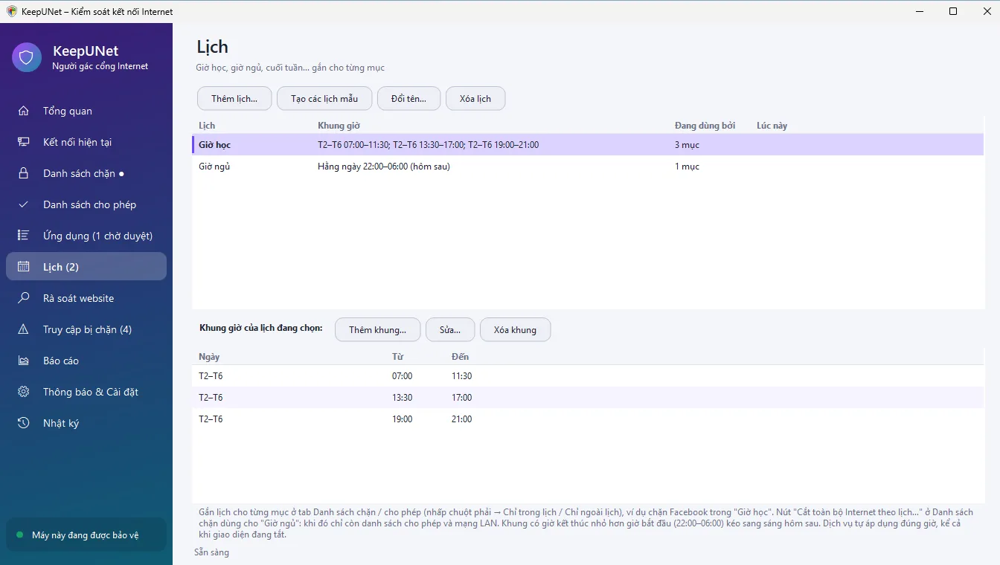

Cập nhật ngày 24/11/2026
Windows không có sẵn nút hẹn giờ tắt Internet. Bạn có 4 cách: hẹn giờ trên modem Wi-Fi (theo từng thiết bị), dùng Task Scheduler để tắt card mạng, giới hạn thời gian dùng máy bằng Microsoft Family Safety, hoặc dùng phần mềm có lịch như KeepUNet: tạo lịch "Giờ ngủ" 22:00–06:00 rồi bấm "Cắt toàn bộ Internet theo lịch". Dù chọn cách nào, hãy cho con dùng tài khoản Windows thường để con không tự đổi lại.
Con hứa "chơi thêm 5 phút" rồi thức tới khuya, hay vừa học online vừa lướt TikTok: hẹn giờ cho Internet giúp bố mẹ đỡ phải nhắc mỗi tối. Bài này hướng dẫn 4 cách hẹn giờ tắt mạng trên máy tính Windows 10, 11, kèm ưu nhược điểm để bạn chọn cách hợp với gia đình.
Cách 1. Hẹn giờ trên modem Wi-Fi
Phần lớn modem của các nhà mạng có mục Kiểm soát truy cập hoặc Parental Control, cho đặt giờ chặn Internet theo từng thiết bị (nhận diện bằng địa chỉ MAC).
- Đăng nhập trang quản trị modem (địa chỉ và mật khẩu thường in ở mặt dưới modem, hoặc trong ứng dụng của nhà mạng).
- Tìm mục Kiểm soát truy cập / Parental Control, chọn máy tính của con.
- Đặt khung giờ chặn, ví dụ 22:00–06:00 mỗi ngày, rồi lưu.
Ưu điểm: miễn phí, áp dụng được cho cả điện thoại, máy tính bảng trong nhà.
Hạn chế: mỗi modem một giao diện, nhiều máy không có tính năng này. Chỉ chặn được cả Internet, không chặn riêng Facebook hay game. Máy bật "địa chỉ MAC ngẫu nhiên", hoặc con phát Wi-Fi từ điện thoại, là vượt qua được.
Cách 2. Task Scheduler tắt card mạng
Dành cho người rành máy tính: dùng Task Scheduler (Trình lập lịch tác vụ) của Windows chạy lệnh tắt card mạng lúc 22:00 và bật lại lúc 6:00.
- Xem tên card mạng trong Settings → Network & Internet → Advanced network settings, ví dụ Wi-Fi.
- Mở Task Scheduler → Create Task. Tab General: chọn Run with highest privileges.
- Tab Triggers: hằng ngày lúc 22:00. Tab Actions: chương trình netsh, tham số interface set interface name="Wi-Fi" admin=disabled.
- Tạo tác vụ thứ hai lúc 6:00 với admin=enabled để bật lại.
Ưu điểm: miễn phí, không cài thêm gì.
Hạn chế: chỉ tắt cả mạng, không chặn riêng trang hay ứng dụng. Nếu máy đang tắt đúng lúc 22:00 mà quên bật tuỳ chọn "Run task as soon as possible after a scheduled start is missed", tác vụ không chạy và mạng vẫn mở khi con bật máy. Con có quyền quản trị thì bật lại card mạng trong vài giây.
Cách 3. Giới hạn thời gian dùng máy bằng Microsoft Family Safety
Family Safety có giới hạn thời gian sử dụng thiết bị theo ngày trong tuần. Đến giờ, Windows khoá máy của con.
Ưu điểm: miễn phí, đặt được từ điện thoại của bố mẹ.
Hạn chế: khoá cả máy chứ không chỉ Internet, nên con cũng không làm bài offline được. Bố mẹ và con đều cần tài khoản Microsoft, và con phải đăng nhập Windows bằng tài khoản đó; tài khoản Windows cục bộ không áp dụng được.
Cách 4. Lịch dùng mạng trong KeepUNet
KeepUNet có sẵn lịch dùng mạng. Không chỉ tắt cả Internet, lịch còn gắn được cho từng mục chặn, ví dụ chỉ chặn Facebook trong giờ học.
Cắt Internet giờ ngủ
- Mở KeepUNet → tab Lịch → bấm Tạo các lịch mẫu. KeepUNet tạo sẵn "Giờ học" (T2–T6), "Giờ ngủ" (22:00–06:00 mỗi ngày) và "Cuối tuần". Muốn giờ khác, chọn lịch rồi bấm Thêm khung… hoặc Sửa….
- Sang tab Danh sách chặn → bấm Cắt toàn bộ Internet theo lịch… → chọn Giờ ngủ.
- Trong giờ ngủ, máy chỉ còn vào được các trang trong Danh sách cho phép và mạng nội bộ (máy in, router).
Chặn mạng xã hội, game chỉ trong giờ học
- Trong tab Danh sách chặn, nhấp chuột phải vào mục muốn chặn (ví dụ facebook.com hoặc danh mục Game).
- Chọn Chỉ trong lịch → Giờ học. Ngoài giờ học, mục đó tự mở lại.

Ưu điểm: chặn theo giờ cho từng trang, từng danh mục hoặc cả Internet. Áp dụng đúng giờ kể cả khi máy vừa bật hay chưa ai đăng nhập. Phải có mật khẩu bố mẹ mới sửa được lịch.
Hạn chế: trả phí sau 30 ngày dùng thử (từ 39.000 đ/31 ngày); chỉ có cho Windows 10, 11.
So sánh nhanh
| Modem Wi-Fi | Task Scheduler | Family Safety | KeepUNet | |
|---|---|---|---|---|
| Chi phí | Miễn phí | Miễn phí | Miễn phí | 30 ngày miễn phí, sau đó từ 39.000 đ |
| Chặn riêng từng trang, game | Không | Không | Có (trên Edge) | Có |
| Vẫn làm bài offline được | Có | Có | Không, khoá cả máy | Có |
| Đúng giờ cả khi máy vừa bật | Có | Cần đặt thêm tuỳ chọn | Có | Có |
| Khó vượt rào | Trung bình | Thấp | Trung bình | Cao |
Mẹo để hẹn giờ thật sự có tác dụng
- Cho con dùng tài khoản Windows thường. Tài khoản thường không đổi được giờ máy, không tắt được tác vụ hay phần mềm của bố mẹ.
- Thống nhất với con trước: giờ học, giờ ngủ, cuối tuần được dùng bao lâu. Lịch mà con hiểu lý do thì ít bị tìm cách vượt hơn.
- Để sẵn trang cần thiết trong danh sách cho phép (trang học trực tuyến của trường, VnEdu) để con không bị chặn nhầm khi làm bài.
Thử KeepUNet trên máy của con
Tải miễn phí, cài trong 5 phút, dùng ngay đầy đủ tính năng. Cần hỗ trợ cứ nhắn Zalo 0987 755 325.